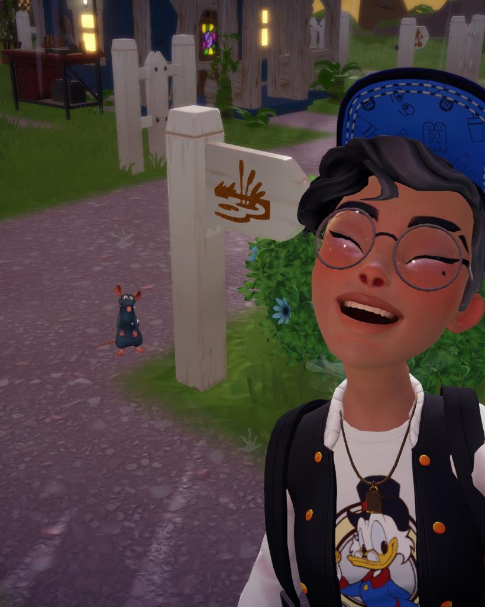

Joana Pereira
Curriculum Vitae
Sobre Mim
Sou uma pessoa responsável, dedicada, organizada e com facilidade de aprendizagem. Tenho experiência profissional em ambiente industrial, nomeadamente na área de estofos automóveis e controlo de qualidade de couro.
Tenho também formação nas áreas de Multimédia e Grooming/Tosquia, com experiência prática adquirida através de estágios profissionais.
Experiência Profissional
Costureira de Estofos de Automóveis
Experiência na confeção e costura de componentes destinados a estofos de automóveis.
Principais tarefas:
- Costura de componentes para estofos automóveis
- Utilização de máquinas de costura industriais
- Preparação e organização dos materiais
- Verificação da qualidade das peças produzidas
- Cumprimento dos padrões de qualidade da produção
Revistadora de Couro
Experiência na inspeção e controlo de qualidade de peças de couro destinadas à produção.
Principais tarefas:
- Inspeção visual do couro
- Identificação de defeitos e imperfeições
- Seleção das peças de acordo com os padrões de qualidade
- Controlo da qualidade do material
- Preparação do couro para as fases seguintes da produção
Estágio de Grooming / Tosquia
Estágio profissional com duração de 180 horas na área de cuidados e estética animal.
Principais tarefas:
- Banho de cães
- Secagem
- Escovagem
- Corte e tosquia
- Corte de unhas
- Higiene dos animais
- Limpeza e organização da sala de banhos
Estágio na Área de Multimédia
Experiência em ambiente de gráfica durante a formação em Multimédia.
Principais tarefas:
- Criação e edição de elementos gráficos
- Trabalho com desenho vetorial
- Preparação de materiais gráficos
- Apoio na criação de cartazes
- Apoio em diferentes trabalhos gráficos
Formação
Curso de Grooming / Tosquia
Formação profissional na área de cuidados, higiene e estética animal.
Curso de Multimédia
Ensino secundário profissional na área de Multimédia.
Competências
- Costura industrial
- Costura de estofos automóveis
- Controlo de qualidade
- Inspeção de couro
- Identificação de defeitos em materiais
- Organização e atenção ao detalhe
- Cuidados e higiene animal
- Banho e secagem de animais
- Tosquia básica
- Corte de unhas
- Multimédia
- Desenho vetorial
- Trabalho em equipa
- Responsabilidade
- Facilidade de aprendizagem
Contactos
Email: o-meu-email@email.com
Telefone: 000 000 000
Localidade: Vila Nova de Famalicão